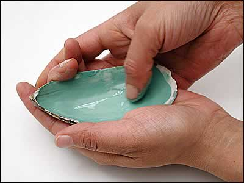

Processing Malachite

The ground malachite is traditionally put into a mussel shell and mixed with a little water with the thumb. The shell does not add anything chemically - simply its smooth surface and shallow basin-like shape makes it a natural tool for the job. | |
| ...previous | next... |